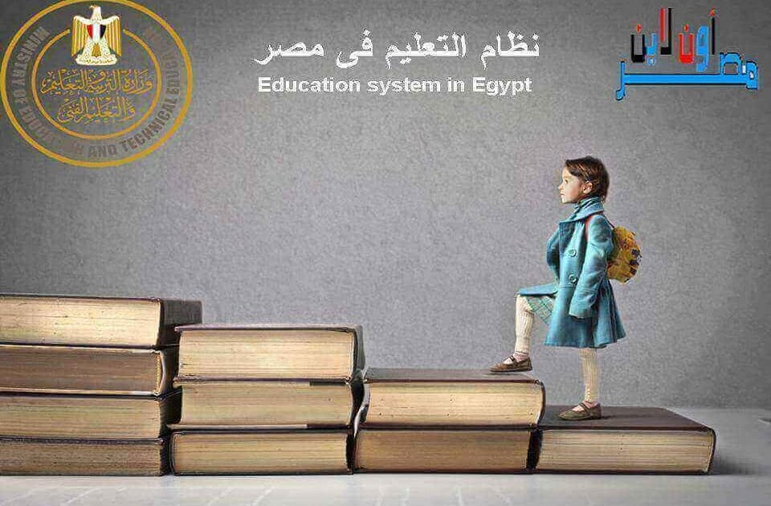
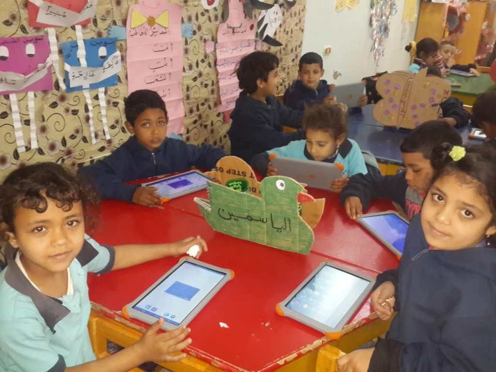
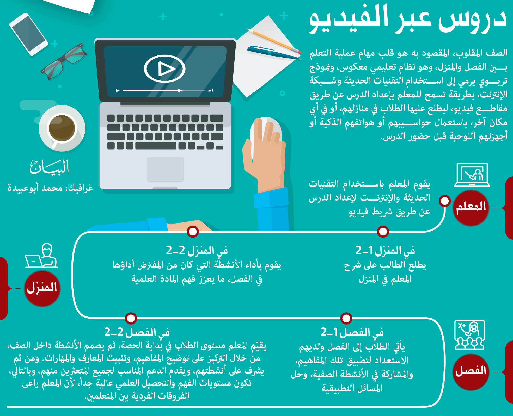

يعد التعليم احد مصادر الاستثمار فى رأس المال البشرى ويمثل طريق التنمية والتقدم والعبور للقضاء على الفقر و بناء الانسان وهذا ما تم طرحه فى رؤية مصر للتنمية المستدامه 2030
في اغسطس 2014 تم تشكيل المجالس التخصصية لتبادل الافكار في تطوير التعليم والبحث العلمي ، وفي ديسمبر 2014 تم اطلاق رؤية مصر 2030 لبناء الانسان القادر على التعلم والابتكار
اتخذت وزارة التعليم والتعليم الفنى خطوات جاده لرفع جودة التعليم فى مصر منها:
1- تحويل نظام التعليم من تأهيل الطالب لدخول الإمتحان إلى "إسلوب حياه" يعمل على تنمية القدرات الإبداعية والتفكير الناقد للطالب 2- بناء نظام تعليم عصري على أحدث المعايير العالمية (من رياض الأطفال حتى الصف الخامس الابتدائي.) 3- تطوير التعلم والتقييم في المرحلة الثانوية من أجل التأكد من تحصيل الطلاب لنواتج التعلم الحقيقية. 4- إنشاء بنوك اسئلة للمرحلة الثانوية بالتعاون مع المركز القومى للإمتحانات والتقويم التربوى 5- بناء 75 ألف فصل جديد لحل ازمة كثافات الفصول بتكلفة 24 مليار جنيه 6- ديسمبر 2015 تم عمل مفاوضات مع مؤسسات المعرفة الدولية والبنية التكنولوجية لبنك المعرفة المصري ، وفي يناير 2016 تم اطلاق بنك المعرفة المصريwww.ekb.eg والذى يعد أكبر المكتبات الرقمية ومركز معرفة إلكتروني على مستوى العالم والتي تقدم وصول مجاني للمنشورات التعليمية والعلمية في العديد
نظام التعليم الجديد
في ابريل 2016 تم اطلاق فكرة التعليم المصري الجديد (تعليم 2.0) بمؤتمر البنك الدولي وقد تمثلت محاوره في (نظام التعليم الجديد – المدارس المصرية اليابانية – الاهتمام بذوي الاحتياجات الخاصة – نظام التقييم المعدل في المرحلة الثانوية – مدرس التكنولوجيا التطبيقية – بناء وتجديد الابنية التعليمية لحل مشكلة الكثافات) و تم البدء فى التنفيذ منذ 2017
تطوير المناهج
تم وضع اطار عام للمناهج بنيت على اساسه الكتب الجديدة الخاصة بنظام التعليم الجديد المطبق الان من رياض الاطفال حتى الصف 5 الابتدائي . وأوضح وزير التربية والتعليم ، أن كتب نظام التعليم الجديد تركز على المتعلم نفسه ، بحيث تشجع هذه الكتب الطالب على فكرة التعلم من اجل الحياة وليس من اجل الامتحان ، حيث يتم ترسيخ اهمية فكرة التعلم مدى الحياة القائم على الكفاءة وكشف المواهب الحقيقية للطالب ، لافتًا إلى أن هذه الكتب تقدم التعلم متعدد التخصصات
المدارس الدولية الحكومية
تم إنشاء 13 مدرسة دولية حكومية متميزة لمتوسطي الدخل ، و تعمل هذه المدارس على تدريس المنهج بالنظام البريطاني ترتكز فلسفته على تقديم خدمة تعليمية متميزة بتكلفة مناسبة لشريحة من المجتمع المصري، وذلك بدعم فني من مؤسسة أصحاب المدارس الدولية.
مشروع المدارس المصرية اليابانية
في 2018 .. تم استحداث مشروع المدارس المصرية اليابانية بالتعاون مع وكالة اليابان للتعاون الدولي (الجايكا) ، وهذه المدارس تطبق مناهج نظام التعليم الجديد بالاضافة لـ انشطة التوكاتسو ، حيث تم تشغيل 35 مدرسة يابانية في عام 2018/2019 في 21 محافظة ، ثم تم تشغيل 6 مدارس في 2019/2020 ، ثم سيتم اضافة مدرستين في العام الدراسي 2020/2021 ، وهناك 9 مدارس جديدة في 20201/2022 . -تم ارسال بعثات من المعلمين لتلقي التدريب في اليابان ، حيث تم تدريب 800 معلم
تفعيل التعلم الرقمي
استثمرت مصر في التعلم الرقمي من 2017 ، عن طريق ضخ مناهج اضافية من بريتانيكا و بيرسون و نهضة مصر باللغة العربية والانجليزية في بنك المعرفة المصري ، وبدأ توفير مصادر متعددة للتعلم واتاحة محتوى رقمي لتنمية مهارة التعلم الذاتي. -تم تدريب 25 ألف اخصائي تكنولوجي لتوفير الدعم الفني للطلاب -تم عمل بنية تحتية بجميع المدارس الثانوية تتمثل في : -اتاحة 1.8 مليون جهاز تابلت للطلاب ، و تركيب 36 ألف شاشة ذكية في الفصول ، وتوصيل شبكات فايبر إلى 2425 مدرسة -تم بناء منصة ادارة التعلم من بنك المعرفة المصري لطلاب المرحلة الثانوية ، وتم اتاحة محتوى تعليمي تفاعلي مربوط بالمنهج لجميع طلاب التعليم الثانوي -تم تنفيذ نظام الامتحانات الالكترونية ، بعد ان تم اعداد بنوك اسئلة من المركز القومي للامتحانات (لإمتحان ما لا يقل عن مليون و 800 ألف طالب في وقت واحد).
الاهتمام بتحسين تعليم ذوي الاحتياجات الخاصة
-في عام 2017/2018 : بدأت إجراءات تيسير دمج الطلاب ذوي الاعاقات البسيطة في المدارس ، و اعداد فصول لمتعددي الاعاقة ، وتدريب معلمي هذه الفئة. -في 2019/2020 : تم وضع اطار لمناهج التربية الفكرية ، وتحديد مخرجات التعلم الجديدة للمكفوفين
استحداث مدارس التكنولوجيا التطبيقية لطلاب التعليم الفني
استحداث هيئة لضمان جودة التعليم الفني
في 2018 : اتفق رئيس الجمهورية مع ألمانيا على تأسيس هيئة لضمان جودة و اعتماد المؤسسات والبرامج التعليمية والتدريبية والتقنية والفنية والمهنية -هذه الهيئة ستساعد على ضمان الاستقلالية والشفافية وتوفير المهارات المتميزة المطلوبة من قبل ارباب العمل في السوق المحلي والدولي
شهد العديد من الانجازات والمشروعات التعليمية التى تحققت فى عهد الرئيس عبدالفتاح السيسى تضمنت الانجازات تطورًا ملحوظًا فى كافة قطاعات التعليم العالي، حيث قطعت الوزارة شوطا كبيرا فى مجال إتاحة خدمات التعليم العالى والتى تهدف إلى الارتقاء بالتعليم العالى وتطوير نظمه وبرامجه وآليات العمل فيه؛
ليواكب متطلبات خطة الدولة للتنمية المستدامة 2030 مثل :
1- ارتفاع عدد الجامعات الحاصلة على مراكز متقدمة فى التصنيفات الدولية 2- رفع عدد الجامعات إلى 27 حكومية و29 خاصة 3- تنفيذ 34 مشروعاً قومياً بينها 8 جامعات أهلية دولية وهم : • 8 جامعات أهلية دولية وهى: (جامعة الجلالة، الأكاديمية العليا للعلوم، جامعة العلمين الجديدة، جامعة المنصورة الجديدة، جامعة الملك سلمان، الجامعة المصرية اليابانية للعلوم والتكنولوجيا، مدينة زويل للعلوم والتكنولوجيا، إعادة تأهيل الجامعة الفرنسية الأهلية بمصر) • (4) جامعات حكومية جديدة وهى: مطروح، الوادى الجديد، الأقصر، الغردقة • (3) جامعات تكنولوجية بالقاهرة الجديدة، وقويسنا، وبنى سويف • (3) معاهد ومراكز بحثية وهى: (مدينة الفضاء المصرية، معهد بحوث الإلكترونيات، المعهد القومى للبحوث الفلكية والجيوفيزيقية) • (8) أفرع للجامعات الدولية وهى:(مجمع الجامعات الكندية، جامعات المعرفة الدولية، جامعة جلوبال، الجامعة الألمانية الدولية، مجمع الجامعات الأوروبية، جامعة العاصمة، المجمع الأكاديمى الدولى، الجامعة المصرية الأمريكية للعلوم الطبية) • (7) مجمعات تكنولوجية، وبيت مصر بباريس للتمثيل الثقافي، فضلا عن مشروعات جارية بالجامعات وأخرى بالمراكز البحثية المتعددة.